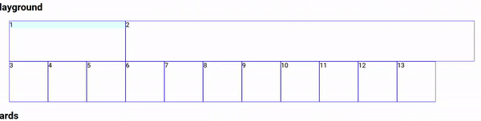
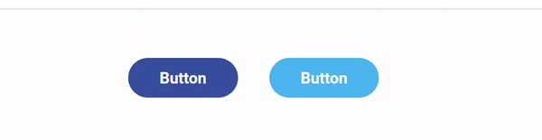
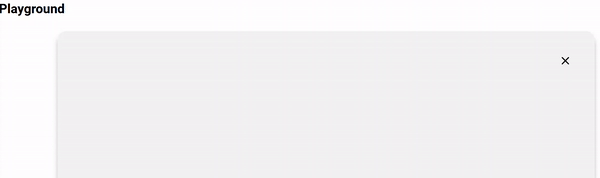

Design System Helper
This guide is the developer documentation for the CivicTechJobs Design System (CTJ-DS). Inside is not only an overview of our components, but also usage tips, and strategies to translate Figma designs into components for flexible, dynamic web pages.
Concepts
To understand our Design System, these are some overarching concepts to keep in mind when working with the DS.
Implementing from Figma to Frontend Development
UI designers specialize in turning project requirements into graphical interfaces that fits project requirements. Designers, however, are not coders. As a result, here are some development-related aspects of componentization that designers do not consider:
- the way components change as screen size changes
- the ease of replicating components in code
- the proper way to configure svg assets for development
Because of these factors, the way a prototype is built on Figma does not necessarily translate 1:1 to how the designs should be build as code. For example, Figma designs does not use SCSS mixins to simplify code or percentages as units of size.
Likewise, we must contend with the fact that Figma designs are static screens tied to very specific viewport sizes. As developers we need to recreate the Figma designs while also considering the intent behind a design.
As a developer, we need to effectively communicate with designers at multiple stage of the Figma design process. This means providing recommendations or alternatives that are simpler and easier for the developer to implement and maintain.
At CivicTechJobs, designers use two standard viewport widths when creating our UIs: 1440px for desktop and 375px for mobile. The appearance of the UI beyond these two sizes are determined by us, as developers, as we componentize the Figma designs. Do note though that our screen size of interest changes depending on the stage of our project. Right now, our current size of interest is:
1025px and up (or, laptop and up)
Scalable and Responsive Components
When creating or using components, it is good to keep in mind the differences between a scalable component and responsive component.
A scalable component:
- takes up a certain fraction of the total screen size
- shrinks and grows along with screen size
- uses relative CSS sizing units, such as % or vm

These columns show scalable behavior. The columns smoothly shrink and grow with the screen size.
A responsive component:
- takes up an absolute amount of the screen
- remains static until reaching a certain breakpoint
- uses static CSS sizing units, such as px

These buttons show responsive behavior. The buttons do not change until the screen reaches a certain breakpoint.
Scalability and responsiveness are not mutually exclusive. A web page can contain both scalable and responsive components. As a matter of fact, a single component can be both responsive and scalable.

This card shows both scalable and responsive behavior. The width smoothly change with the screen size, but drastically changes at our max small tablet breakpoint.
Only by combining both scalability and responsiveness in our design, can we create a high-quality site. When translating from Figma to code, most of the time, the work is in deciding what part of the Figma design should scale, and what part should be responsive. As a rule of thumb, when designing the transition from the desktop to mobile Figma, scale down empty space and margins, and responsively shrink buttons and text.
PropType as Documentation
As a small project, React recommends the use of PropTypes as our type checking library.
By using PropTypes, we have an easy way to look up hints on how to use our components.
Button.propTypes = {
addClass: PropTypes.string,
color: PropTypes.oneOf(["primary", "primary-dark"]),
disabled: PropTypes.bool,
href: PropTypes.string,
length: PropTypes.oneOf(["", "long"]),
onClick: PropTypes.func,
size: PropTypes.oneOf(["sm", "md", "lg", "icon"]),
target: PropTypes.oneOf([
"_blank",
"_self",
"_parent",
"_top",
PropTypes.string,
]),
};
For this <Button> component, PropTypes provide clues on the component's props. From these hints, a developer can guess that a small, long button would be declared as <Button size="sm" length="long">
Because comprehensive documentation is difficult for a small team to maintain, we rely on PropTypes and cleanly written code to provide clues on how to use each component. We recommend new developers take time to play with the components in components/ to fully understand how to utilize them. You can use the /demo web endpoint and Demo.js when developing to play around with our components.
Components
While we can use pure CSS as our styling sheet, using SCSS with React components allows us to standardize our components in a powerful way. Componentization allows:
- quick customizations through React props
- standardizations to our components for accessibility
- reuse of the same component across multiple pages
- updating designs by simply editing the base component
Because of these benefits, we use a component-first approach to developing web pages. Please componentize as much as possible and use them to build high-quality web pages!
As a note, the DS is put together based on industry trends and practices. If you have ever explored Bootstrap, MUI, or Atlassian Design System, you will see many similarities between their components and ours.
Mixins and Classes
Most of our styles have a class and mixin equivalent. The class, for the most part, is created from just declaring the mixin inside the class.
@mixin hidden {
display: none;
}
.hidden {
@include hidden;
}
Above is the hidden mixin definition. Below is the hidden mixin declaration as part of the .hidden class.
These are both provided to suit different use cases. For example, the class version is best suited for declaring inside of React components or HTML elements as part of the addClass prop or className attribute. On the other hand, the mixin version is best used when adding it to your own custom style, such as with media queries.
.my-own-custom-class {
@include breakpoint-media-max("smtablet") {
@include hidden; // Do this
@extend .hidden; // Do not do this, will break
@include col-size(6); // Do this
@extend .col-6; // Do not do this, will break
}
}
Please use the mixin version when you want your own custom style to inherit from an existing style!
Layout and Columns
As with most design systems, we use a standard 12-column system to subdivide our layouts. Each column, without spacing, is worth *8.33% of its container's width**. This means that columns are, by default, scalable.
To use of our column classes, first declare a parent container with the .flex-container class. Then use col-* classes in each children, replacing the * with the number for the column size.
We need to use a parent .flex-container with col-* classes to subdivide the UI.
Our 12-column system can be used in conjunction with .row and nested .col-* to further subdivide the UI, and create more complex layouts.
With .flex-container, .row, and .col-*, we can create complex layouts that fit our purposes.
*Note: Although Figma uses 12 columns to subdivide the entire screen, our column classes subdivides the container. This means that we can divide the whole screen into columns, and then divide each column even further to achieve our desired ratios.
Smart Spacing
"99% of the time, you'll want to reclaim space from padding, margins, or empty space as screen size shrinks."
The spacing utilities are classified by attributes and size.
Table of Spacing Attributes
| Spacing attribute (margins) | Meaning | | | Spacing attribute (padding) | Meaning |
|---|---|---|---|---|
| m | all margins | | | p | all paddings |
| mt | margin-top | | | pt | padding-top |
| mr | margin-right | | | pr | padding-right |
| mb | margin-bottom | | | pb | padding-bottom |
| ml | margin-left | | | pl | padding-left |
| mx | margin-left and -right | | | px | padding-left and -right |
| my | margin-top and -bottom | | | py | padding-top and -bottom |
Table of Spacing Sizes
| Spacing size | Actual size (px) |
|---|---|
| 0 | 0px |
| 1 | 8px |
| 2 | 16px |
| 3 | 24px |
| 4 | 32px |
| 5 | 40px |
Tables showing the different way we classifies our spacing utilities. As an example, .px-4 sets the left and right padding as 32px.
Because our DS is based on a 12-column system, spacing utilities are made such that adding them on would not alter the 12-column system. For that reason, it is optimal to use the spacing utilities whenever possible over setting custom margins or padding.
Add margins responsibly. Try to use the spacing utilities over creating custom margin classes.
As an example, if Figma indicates a 10px left margin, use either .ml-1 or .ml-2. Other times, however, Figma designs show spacing that falls outside of our size range. In this scenario, rather than set a specific margin, try to use centering instead, as large spaces are usually not a result of spacing, but of centering.
By being smart about the way we include spacing, we ensure scalability and reduce the maintenance cost of our code.
Responsive Mixins
"When using responsive mixins, order matters! Always declare them from big to small."
Several of our components have *-responsive mixins at the end of the .scss file. These act as helpers to quickly create responsiveness into our components, keeping our code simple to understand.
These mixins always use max-width in its media query (as we use a desktop-first approach), so order matters! To use them properly, specify a default* and declare screen size from largest to smallest:
DO: specify a default on top and declare *-responsive mixins from large to small screen sizes.
DON'T: declare *-responsive mixins without a default on top or from a smaller to larger screen size.
*Note: There is one caveat to that as some components come with their own default. For example, buttons take a size prop, in which you declare a default already. Therefore when using the responsive mixin for button size, there is no need to declare a top level default in the scss code.
SVGs as Components and as Data-URLs
SVG assets are read into our codebase as React components (or inline SVG) or data-urls.
As React components:
- specified with a starting uppercase
- allows the use of React props to dynamically alter the component
- requires editing stroke and fill values to inherit to allow passing in props
- requires a wrapper element to add additional styling
- are imported directly from the image file
- difficult to work with by provide lots of customization
As Data-urls:
- specified with a starting lowercase
- are used as the src in
imgtags, to allow quick width/length adjustments - difficult to dynamically change
- simple to declare and use
- are imported with
?urlqualifiers - not customizable beyond width and height
// COP Icons
import CopIconData from "./svgs/cop-icon-datascience.svg";
import CopIconEngineering from "./svgs/cop-icon-engineering.svg";
import CopIconOps from "./svgs/cop-icon-ops.svg";
import CopIconProduct from "./svgs/cop-icon-product.svg";
import CopIconUiux from "./svgs/cop-icon-uiux.svg";
import copIconData from "./svgs/cop-icon-datascience.svg?url";
import copIconEngineering from "./svgs/cop-icon-engineering.svg?url";
import copIconOps from "./svgs/cop-icon-ops.svg?url";
import copIconProduct from "./svgs/cop-icon-product.svg?url";
import copIconUiux from "./svgs/cop-icon-uiux.svg?url";
The top icons are imported from the image file as SVG components (or inline SVG). The bottom icons are the same file imported as data-urls. Notice how the latter import file adds "?url".
When using our SVG assets make sure to use the best import for the job. In some cases, however, neither of these imports are optimal to use. For example the SVG itself might be incorrectly formatted.
This SVG contains extra spaces, especially on the bottom. This image is impossible to center correctly without adding unnecessary margins.
In this case, rather than calculating some difficult to maintain, complex spacing, simply request the design team to provide a better SVG or edit the SVG yourself and send a copy to the design team.
Troubleshooting Errors
You may not @extend selectors across media queries.
This happens when @extend is used inside of media queries. An example using our DS,
.header-logo-desktop {
@include breakpoint-media-max("smtablet") {
@extend .hidden;
}
}
Using @extend inside of a media query will result in an error. Instead, use a mixin declaration with @include instead. Most classes in the DS include an equivalent mixin for this specific purpose.
.header-logo-desktop {
@include breakpoint-media-max("smtablet") {
@include hidden;
}
}
This works because it declares a mixin rather than extend the class!
To avoid these errors, it is encouraged to use the mixin rather than the class version of a specific style for inheritance whenever possible!
For more information visit this documentation and this Stack Overflow question.
Resources
Atomic Design
Atlassian Design System
Bootstrap
Material-UI
Note: If embeds are out-of-date, and you have no access to the originals, please fork and replace them through CodeSandbox!